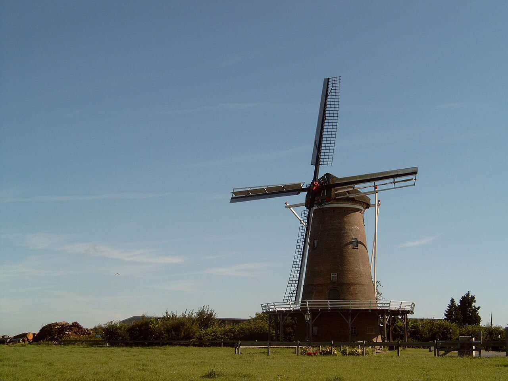

- Weetjes over Neede:
- Plaats in Berkelland
- Bijna 10.000 inwoners
- Mooiste dorp in Nederland
- 46km2 oppervlakte
- Maarliefst 5 cafe's

De Needse Kerk
De Sint-Caeciliakerk is een rooms-katholieke kerk in de Nederlandse plaats Neede. De kerk is ontworpen door Johannes Sluijmer en is in de jaren 1949 - 1950 gebouwd. De kerk is in 1950 ingewijd, later dat jaar geconsacreerd door Johannes Olav Smit en kreeg als beschermheilige de martelares Cecilia. Katholieken waren voordien gewezen op een kleinere kerk die tijdens de Tweede Wereldoorlog flink beschadigd was.